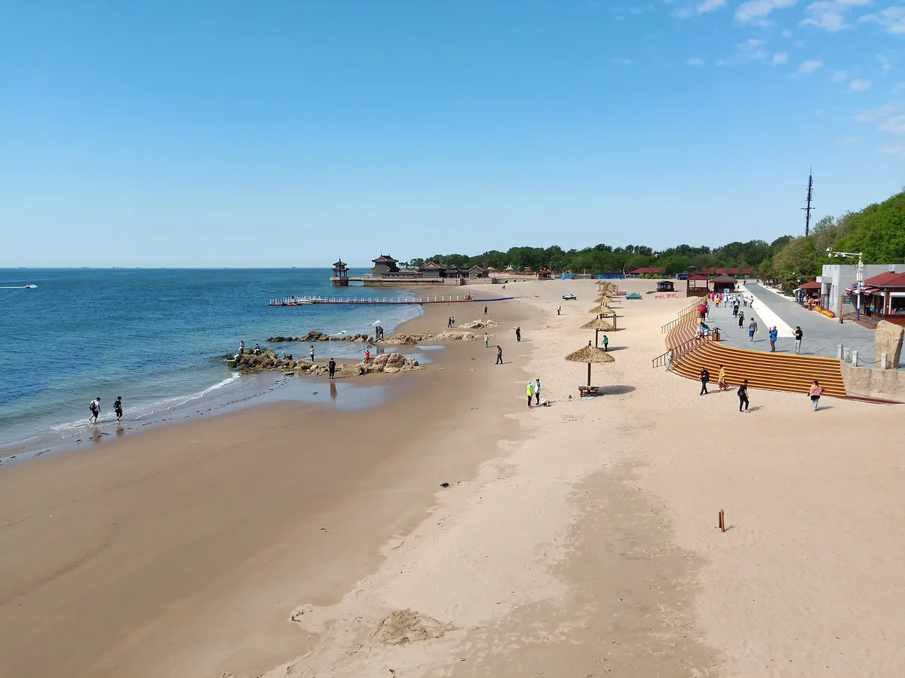
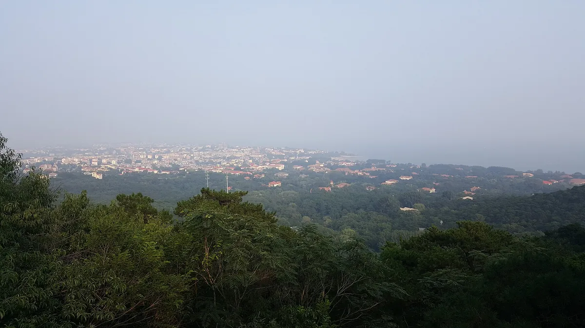
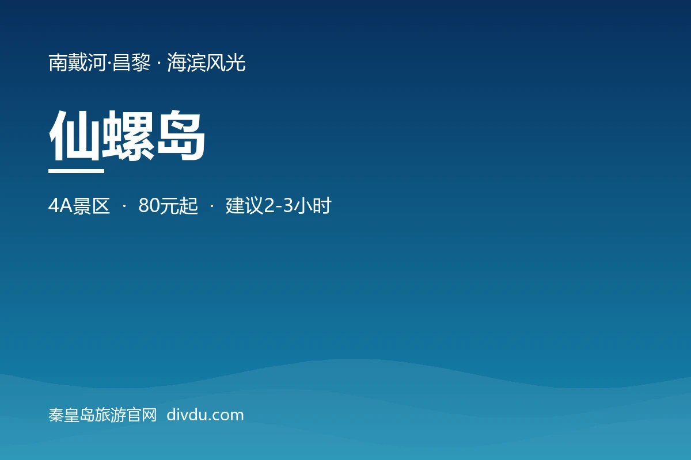

根据 2026 年游客真实评价、搜索热度与本地人推荐,精选最值得去的 10 个。错峰去的基本全员好评,旺季扎堆去的大多吐槽人多价贵——这里适合亲子、老人、短途避暑与慢节奏度假。
先看分布:10 个景点集中在 3 个片区
同片区内车程都在半小时以内,按片区走能少折腾一半时间。
按天数怎么串
- 经典 1 日鸽子窝日出 → 山海关 → 老龙头第一次来,先把最有代表性的看完
- 休闲 2 日Day1 北戴河片区(鸽子窝 → 老虎石 → 碧螺塔夜场)/ Day2 山海关片区节奏舒服,适合带老人孩子
- 深度 3 日在 2 日基础上加南戴河片区(阿那亚 + 渔岛或仙螺岛)需自驾,建议住北戴河或昌黎
看中哪个就点「加入行程」,到 行程规划 里会自动按片区排好每一天。
TOP 10 逐个看
-
1

-
2

山海关 · 天下第一关
明长城东北关隘,"天下第一关"巨匾高悬镇远楼之上,每个字一米见方,六百年未换。登城楼可俯瞰整座古城。
游客说:历史韵味十足,漫步明清风格街道;城楼壮观,适合带孩子研学;古城免费逛,只有上城楼才要票
-
3

-
4

-
5

-
6

-
7

-
8

-
9

-
10

去之前先知道这几件事
错峰出行
5 到 6 月或 9 月去,人少、价低、海水温度也还行,体验比暑假好得多。
门票以现场为准
本页价格按 2026 年公开信息整理,景区常按淡旺季浮动,出发前在购票平台再确认一次。
免费的未必差
老虎石、北戴河海滨、山海关古城街区都免费,口碑不比收费景点低。
按片区安排
北戴河与山海关相距约 30 公里,来回跑一趟要一个多小时,尽量同片区连着玩。
这些必玩的,哪些真适合你?
留个联系方式,我们按你的情况给一份具体建议。也可以直接加微信,或发邮件到 zhaochenqi@163.com。